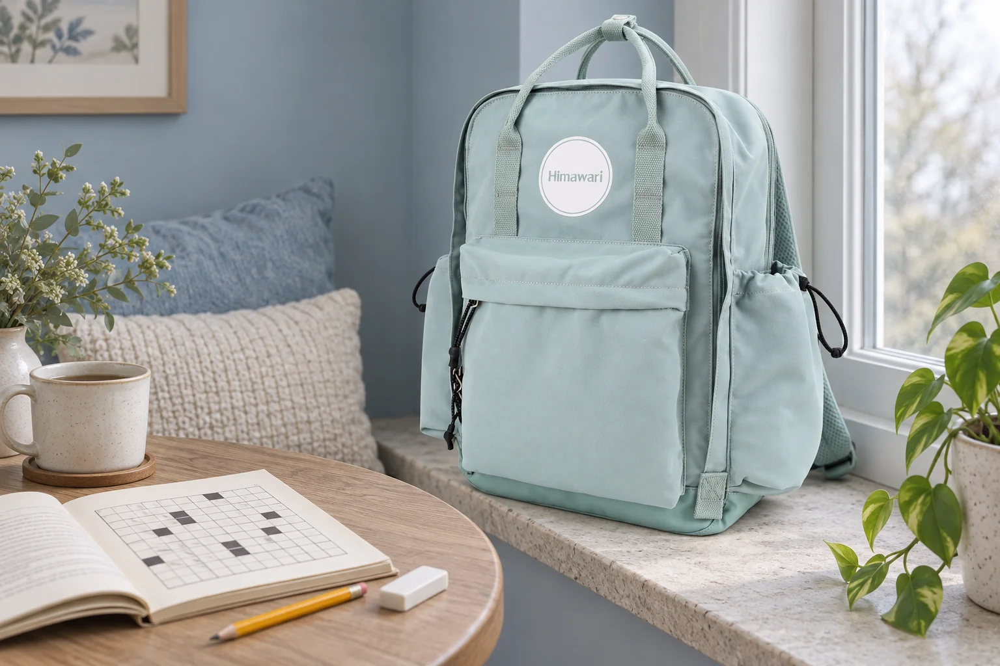

앉아서 받칠 백팩은 높이와 깊이를 따로 보기

백팩의 크기를 거울 앞에서만 비교하면 앉은 자리의 모습이 빠집니다. 대기실이나 좌석에서 가방을 몸 앞에 받치면 위쪽이 팔과 만나는지, 앞뒤 깊이 때문에 무릎 밖으로 나오는지가 눈에 들어옵니다. 필요한 짐을 담고 앉아 있을 동안 어떻게 다룰지에 따라 보고 싶은 치수가 달라집니다.
앉아 가방을 두는 위치는 장소의 안내와 실제 공간을 먼저 봅니다. 무릎에 둘 수 있는 상황인지, 앞쪽에 허용된 자리가 있는지, 통로를 비워야 하는지에 따라 선택이 달라집니다. 평소 자주 앉는 장면에서 가방 본체와 몸, 주변 좌석이 어떻게 놓이는지 확인하는 방법을 생각해봅니다.
세로 길이는 팔을 움직일 자리와 함께
가방을 무릎에 세워 받칠 생각이라면 윗부분이 어디에 놓이는지 봅니다. 지퍼를 열 손이 본체 위로 들어가는지, 팔꿈치를 크게 벌려야 하는지도 살펴봅니다. 서 있을 때 등에 맞는 높이와 앉아서 손을 올려놓기 편한 높이는 다른 질문입니다. 단지 세로 길이가 짧다는 이유로 필요한 손동작이 모두 쉬워진다고 판단하지 않습니다.
책이나 파일이 위로 올라오는 배치라면 닫힌 가방의 높이에 더해 물건을 꺼낼 길이가 필요합니다. 가방을 계속 몸 쪽으로 기울여야 파일이 나온다면 그 동작을 좌석에서 할 수 있을지 생각합니다. 당장 필요한 작은 소품만 꺼낼 배치로 바꾸는 방법도 있습니다. 앉은 자리에서 무엇을 꺼낼지에 따라 가방 높이의 쓰임이 달라집니다.
Himawari No.1089 제품 정보의 민트 제품은 외부 크기가 가로 29.5 × 세로 42 × 폭 12cm로 안내되어 있습니다. 정면 원본에서는 위쪽 손잡이와 앞면의 넓은 주머니 부분을 볼 수 있습니다. 숫자는 겉 규모를 비교하는 출발점입니다. 앉았을 때 무릎에 맞는지나 무릎 앞 여유를 대신 보여 주지는 않으므로 자신의 앉은 자세와 실제 짐을 함께 봐야 합니다.

앞뒤 깊이는 짐을 담은 모습으로
얇아 보이는 백팩도 앞주머니에 물건이 들어가면 닿는 면이 달라질 수 있습니다. 평소 쓰는 필통이나 용기를 담은 상태에서 앞쪽이 얼마나 나오고 어느 부분이 팔에 닿는지 살펴봅니다. 외부 폭의 숫자만 보고 빈 가방과 같은 모양을 예상하지 않습니다. 물건이 한쪽에 모였다면 가방 크기를 바꾸기 전에 배치가 어떤 영향을 주는지도 확인할 수 있습니다.
가방을 눕혀 무릎에 받치는 방식이라면 세로로 놓을 때와 받치는 면이 달라집니다. 몸 밖으로 나온 부분이 주변 좌석과 겹치는지 보고 안에 든 물건의 방향도 생각합니다. 세워 두도록 준비한 용기를 그대로 눕혀도 된다는 뜻은 아닙니다. 물건마다 허용된 운반 방향을 따르고 그 조건에서 가방을 둘 방법을 고릅니다.
옆자리에 사람이 앉았을 때도 같은 구성을 다룰 수 있는지 떠올려봅니다. 빈 좌석에서 팔을 넓게 벌려 열었던 방식은 옆 사람이 있는 상태에서 달라질 수 있습니다. 물건을 꺼내려면 가방을 먼저 들어 올려야 하는지, 여밈을 몸 가까이에서 조작할 수 있는지 봅니다. 자리의 넓이를 가방 크기 하나로 설명하지 않고 손을 움직일 범위까지 포함해 비교합니다.
받치는 손을 뗄 수 있는지보다 무엇을 할지가 먼저
가방을 무릎 위에 올린 뒤 휴대전화를 보거나 노트를 펼칠 계획이 있다면 본체를 계속 받칠 손이 필요한지 살펴봅니다. 필요한 물건을 꺼낸 뒤 가방을 다른 허용된 위치로 옮기는 편이 편할 수 있습니다. 무릎 위에서 모든 일을 끝내야 한다는 조건을 두지 않아도 됩니다.
의자에서 일어나는 동작도 이어서 봅니다. 손으로 가방을 들고 난 뒤 몸을 일으킬지, 다른 물건을 먼저 정리할지 정합니다. 가방을 내려놓은 끈이 발 아래에 들어가 있으면 일어날 때 함께 움직일 수 있습니다. 앉을 때 가방 본체만 보았다면 일어날 때에는 끈과 손에 든 소지품까지 확인하는 과정이 추가됩니다.
겉옷이 두꺼워진 계절에는 몸 앞에 남는 공간이 달라질 수 있습니다. 같은 백팩을 쓰더라도 코트를 벗어 손에 들면 관리할 짐이 하나 늘어납니다. 본체를 작게 만들기 위해 필요한 물건을 빼기보다 가방과 겉옷을 각각 어디에 둘지 봅니다. 겉옷을 가방 안에 넣을 계획이라면 실제로 넣은 상태에서 앉아 다루는 동작을 다시 확인합니다.
현재 가방에서 비교할 치수 하나 찾기
지금 가방이 앉은 자리에서 불편했다면 어느 방향 때문인지 남겨봅니다. 위쪽이 높아 손이 닿기 어려웠는지, 앞뒤로 두꺼워져 팔을 놓기 어려웠는지, 가로가 넓어 옆자리와 가까워졌는지를 나눕니다. 모든 치수를 한꺼번에 줄이기 전에 바꾸고 싶은 방향 하나를 고르면 후보를 볼 때 필요한 질문이 선명해집니다.
온라인 후보의 크기를 종이로 표시해보는 방법은 바깥 규모를 가늠하는 데 쓸 수 있습니다. 종이 모형은 무게와 내용물의 움직임을 보여 주지 않습니다. 실제 가방을 받을 때 확인할 범위를 정하는 보조 자료로 사용합니다. 모델이 앉아 있는 사진이 있더라도 그 사람의 자세와 내 좌석이 같지는 않으므로 제품 수치와 함께 참고하는 편이 좋습니다.
후보를 직접 볼 수 있으면 평소 짐을 담고 허용된 자리에서 앉아봅니다. 가방을 받치고 작은 소품 하나를 꺼낸 뒤 다시 닫고 일어나는 동작까지 이어봅니다. 지퍼를 잡은 손과 본체를 받친 손이 어디에 놓였는지 기억하면 다음 후보와 비교하기 쉽습니다. 앉아 있는 사진 한 장에 맞추기보다 자신이 반복할 손동작을 기준으로 크기를 남길 수 있습니다.